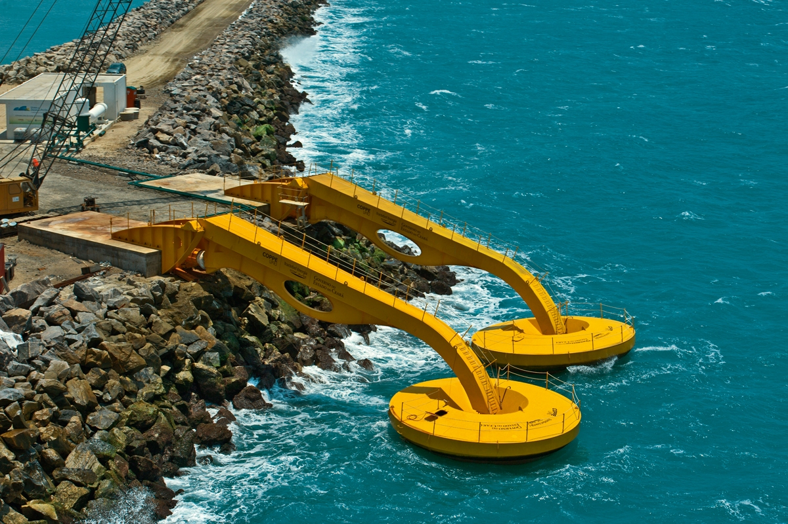

A maremotriz é uma forma de gerar energia por meio do movimento das marés. Podem ser obtidos dois tipos de energia das marés: a energia da corrente oceânica causada pelas marés e a energia potencial causada pela diferença de altura entre a maré alta e a maré baixa.
O aproveitamento da energia das marés pode ser feito a partir de usinas que atuam por meio da ação da água do mar. Há uma diferença de 7 metros entre a maré alta e a maré baixa para este uso de energia que é renovável.
Vantagens
Desvantagens